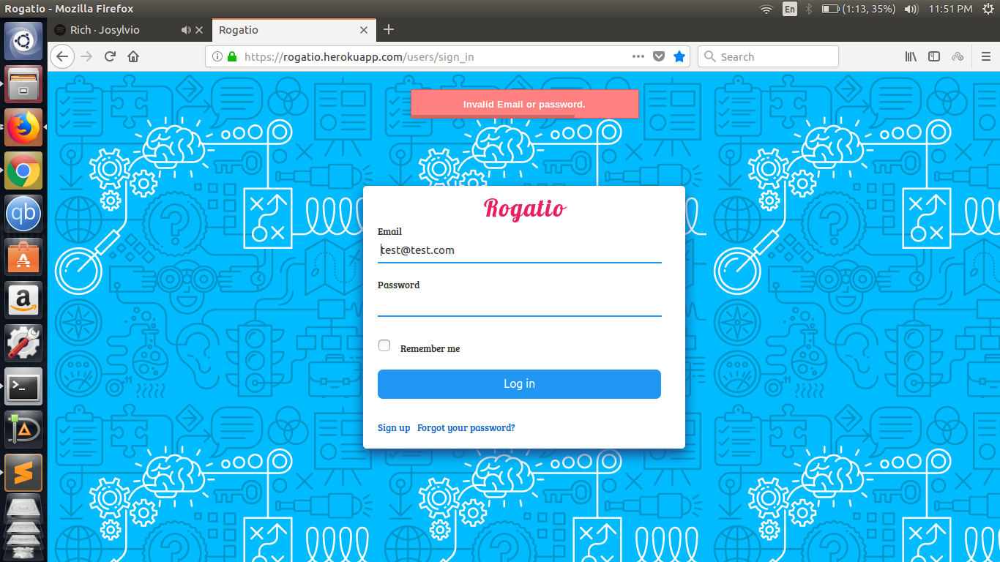

Divyansh Sharma
Software Developer
I am a computer science and engineering third year undergraduate student of National Institute of Technology Hamirpur. I am an enthusiatic developer and coder and loves to develop web apps using cutting edge technologies, Moreover I have also a strong hold on machine learning and Blockchain technology. Besides I love to explore new places, people.
divsharma.nith@gmail.com
9418396778
Hamirpur (H.P.)
Education
Btech
Computer Science and Technology
2015-2019
NIT Hamirpur
Current CGPI 9.29
Computer Science and Technology
2015-2019
NIT Hamirpur
Current CGPI 9.29
Senior Secondary
CBSE
2015
Sr Sec Model School Sundernagar
Percentage 96.00%
CBSE
2015
Sr Sec Model School Sundernagar
Percentage 96.00%
Secondary
CBSE
2013
Sr Sec Model School Sundernagar
CGPI 10/10
CBSE
2013
Sr Sec Model School Sundernagar
CGPI 10/10
Latest Projects

Rogatio
Rogatio
Rogatio
Rogatio
Skills
MEAN STACK
Ruby on Rails
Machine Learning
Data Structures and Algorithms
C,C++,Python
UI Design